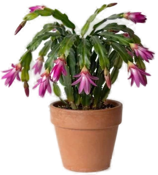

Декабрист
Характер
Кактус из влажных лесов Бразилии: там он растет на деревьях, а не в пустыне. Колючек нет, листьев тоже — то, что ты считаешь листьями, это плоские стебли-членики. Живет десятилетиями и цветет зимой, если осенью дать ему длинные ночи и прохладу.
Свет
Яркий рассеянный свет. Прямое полуденное солнце обжигает членики (RHS), летом от солнца они бледнеют или желтеют — притеняй. Зимой, наоборот, ставь посветлее (Missouri, NC State).
Полив
Весной и летом поливай, когда подсох верхний слой: совсем не пересушивай (RHS), но и не держи в сырости — корни гниют. Осенью полив сокращай: с середины сентября (NC State); Missouri советует держать суше с середины октября, легкая сухость помогает заложить бутоны. Когда бутоны появились и пока цветет — грунт ровно влажный, пересушка роняет бутоны (Iowa State). Воду из поддона сливай.
Влажность
Любит влажный воздух (NC State, RHS). Сухой воздух — одна из причин опадания бутонов. Но при высокой влажности без проветривания NC State предупреждает о серой гнили.
Температура
В сезон роста 18–27 °C: RHS дает 18–20 °C, NC State и Missouri — 21–27 °C. Чтобы зацвел: ночью 13–18 °C (Illinois, Iowa State, NC State) и 12–16 часов полной темноты в сутки — Illinois пишет от 12, NC State и Missouri от 13, Iowa State 14–16. Держи так 5–6 недель (Illinois), начиная с середины сентября (NC State). При ночах около 10–13 °C бутоны закладываются при любой длине дня (Missouri, Illinois). Выше 21 °C цветения может не быть (Iowa State), ниже 10 °C бутоны могут опасть (Illinois). Вечерний свет ламп и фонарей тоже срывает цветение (Missouri).
Грунт и пересадка
Рыхлый грунт с хорошим дренажом; NC State предлагает смесь торфа, песка и перлита. Специальный кактусовый грунт не обязателен (Iowa State). Пересаживать достаточно раз в 3 года (NC State, Illinois). Подкармливай с весны до конца лета по инструкции на упаковке (Missouri).
Какой горшок нужен при пересадке →
Состав грунта: калькулятор смеси →
Размножение
Черенками — очень легко (RHS). Отломи у сочленения отрезок из 2–5 члеников и укорени во влажном рыхлом грунте или перлите. Корни — через 6–8 недель (Iowa State). Чтобы куст был пышнее, прищипни стебли в июне (Illinois).
Частые беды
- Опадают бутоны — перепады температуры, сквозняк, сухой воздух, пересушка или перелив, перестановка до раскрытия цветов
- Не цветет — свет по вечерам прерывает темноту или слишком тепло ночью
- Вялые членики, гниль у основания — перелив и корневая гниль
- Бледные или желтые членики — прямое летнее солнце
- Вредители — мучнистый червец, щитовка, паутинный клещ
- Мошки над грунтом — грибные комарики: грунт слишком мокрый
Подробные разборы:
Интересно
- Гибрид Schlumbergera × buckleyi вывел Уильям Бакли в английском питомнике в 1840-х, сортов уже больше 200 (NC State).
- Бывает, что доживает до 100 лет и переходит от поколения к поколению (Illinois Extension).
- Как отличить: у S. truncata на краях члеников острые зубчики, у S. × buckleyi края округлые. В природе цветы опыляют колибри (NC State).
Декабрист и кошки
Не ядовито
По базе ASPCA (карточка Christmas Cactus, Schlumbergera bridgesii) не ядовит для кошек. NC State тоже отмечает оба вида как безопасные для питомцев.
Источники
Факты взяты из справочников университетских служб, RHS и базы ASPCA. Где источники расходятся, мы так и пишем.